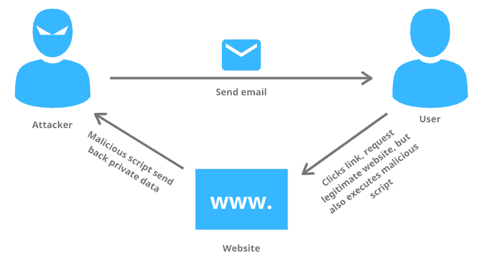
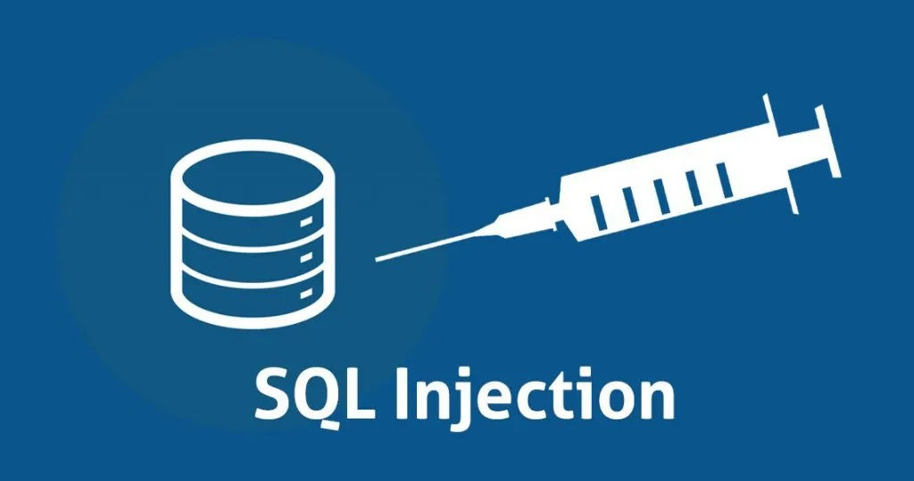
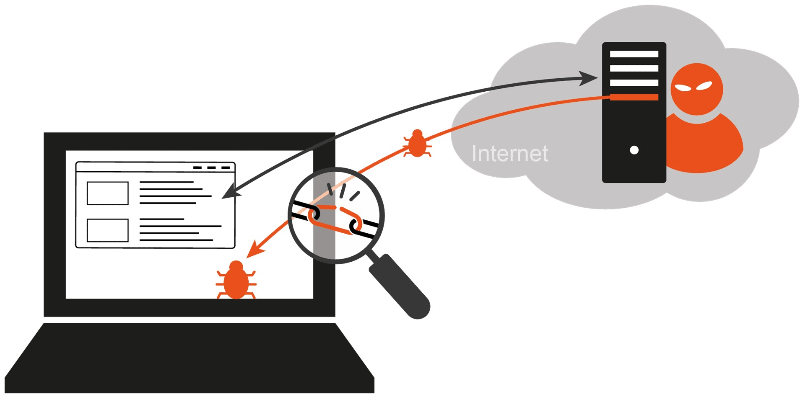
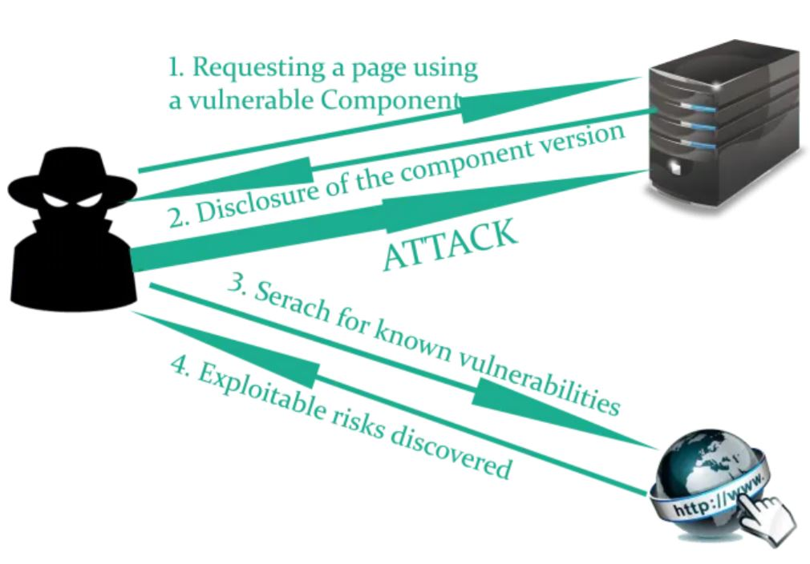
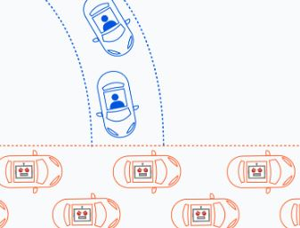
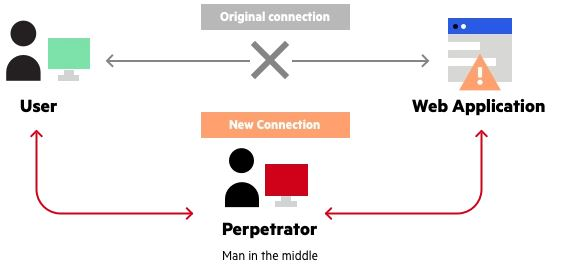
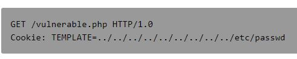

1. XSS: Cross-Site Scripting

Source: mlytics.com
Cross-site scripting occurs when a user is able to inject malicious scripting into the code of a website. The payload can be in any client-side language, but is usually in JavaScript.
There are three types of XXS. Reference: synopsys.net
- In stored XSS, the attacker uploads it to a database which is then downloaded by users. Reference and example: portswigger.net
- In reflected XSS, the user makes an unsafe HTTP request that contains the usafe code within the url parameters. Reference and example: portswigger.net
- The difference between Stored and Reflected XSS? In stored XSS the attack is self-contained within the application, and the attacker does not need to induce the user to make a request containing the exploit. Reference: portswigger.net
- In DOM-based XSS, the user opens a URL with malicious script within the URL parameters (much like reflected XSS), but the attack results in the DOM being modified. Eg. the URL parameter is supposed to be displayed on the DOM, but instead a malicious script is inserted into that position, and then runs. It is a subset of Reflected XSS, as the code is client side only. References and examples: portswigger.net and owasp.org
2. SQL Injection Attacks

Source: medium.com
If the programmer does not create a separation between program code and user-provided input, then a user can inject malicious code into an application.
This is one of the most common types of attack. In this attack the user provides a SQL statement in an input that can then control the backend database server.
This will be in the form of a SQL statement and is independent of the backend server language or technology. When a user submits an input on a form, they can change the query structure by inserting particular characters,
so that the server assumes the input is done and the following is code that should be run. In this way the user can modify the backend database or extract information.
eg. the user adds '-- at the end of a query input. Any sanitising code after this is then interpreted as a comment and ignored.
- Blind SQL Injection happens when the attacker does not receive a response straight back, but must access the results through other means.
- A second-order SQL injection happens when the the application takes user input and stores it for later use. A second HTTP request then is able to leverage that new vulnerability.
3. Broken Authentication
Source: auth0.com
This is caused by poorly implemented authentication and session management.
If an attacker is able to compromise, session tokens or keys, or passwords then they can assumer a user's identity.
Types:
- Brute Force: Guessable login details
- URL Rewriting: URL contains session information, accessed through unsecured wifi connection (eg. ID's)
- Session Fixation: Session ID's reused
- Session Persistence: Session does not time out
- Credential Stuffing: Session information stored unencrypted
- Phishing attacks
4. Drive By Download

Source: norbert-pohlmann.com
Drive By Download is when a program is installed to your device without your consent.
An unwanted download may be a non-malicious program such as adware, or malware.
Drive By Download refers to the ladder, and involves malware.
The malware may:
- Hijack your device for a botnet, pivot attack, or further breach.
- Monitor your activity.
- Steal data from your device.
- Damage your device.
- Convince you to download the software willingly.
- Use a deceptive link or as part of legitimate software.
- Interaction with a malicious site.
- Attacker installs it themselves after taking control through another method.
5. Password-based attacks
Source: medium.com
Password based attacks involve the attacker gaining access to a system or site by guessing or accessing a password.
Password based attacks might include:
- Brute force: Attacker repeatedly guesses a password by trying every possible combination. This is effective where passwords are short or non-complex. Tools such as Jack-the-Ripper and Hashcat can automate the process.
- Dictionary attack: Attacker attempts passwords by using dictionary compiled strings. The dictionary will contain common or previously breeched passwords.
- Phishing attack: Attacker convinces victim to divulge their credentials into a fraudulent website.
- Keylogger Attack: A keylogger is a software or hardware device used to track the key strokes on the victim's computer. The attacker will need to convince the victim to install the software with a phishing email, or physically install a device themselves.
6. Fuzzing

Source: wisc.edu
Fuzzing is a method of finding vulnerabilities in software by injecting malformed data in an automated way.
eg. If the user is expected to to pick a small number, what happens when we inject 255 or a really high number?
There may be an buffer overflow vulnerability. Or the software may crash.
A fuzzer might try attacks on:
- Numbers: zero, negative or big numbers.
- Chars: urls, command-line inputs, escaped and inerpretable characters.
- Binary: pure binary sequences.
Sources: owasp.org and pages.cs.wisc.edu
7. Using components with known vulnerabilities

Source: medium.com
A known vulnerability will have been previously discovered and documented.
An attacker has access to lists of known vulnerabilities.
Developers should only use the minimum necessary components, and should ensure that they are free from known vulnerabilities.
Furthermore the developer should ensure input validation and output encoding to minimise the chance of attacks (minimise SLQ injection and XSS attacks).
eg. A developer continues to run a system on a very old version of Microsoft Windows, without taking steps to isolate the sytem from any outside networks.
Sources: owasp.org and medium.com
8. DDoS (Distributed Denial-of-Service)

Source: cloudflare.com
An attacker disrupts the normal flow of network traffic by flooding the target with requests.
This is often done by directing a large network of compromised computers (botnet) to contact the target at the same time.
There are many possible types:
- Application layer attack: A HTTP request requires little work, but the target may need to reposnd to database queries and load files.
- HTTP floods the target with HTTP requests, resulting in a denial-of-service.
- Protocol attack: Overwhelms network protocol resources and targets network equipment like firewalls and load-balancers. eg. The attacker spoofs SYN packets and sends a large number of initial connection requests, whithout finishing the handshake process.
- Volumetric attacks: The attacker overwhelms the target by sending them large amounts of data. eg. DNS amplification involves sending a DNS server a request with a spoofed IP. The DNS server then sends the victing a response.
The vulnerability can be reduced through limiting the number of server requests, using a firewall, rerouting all traffic to anull route, or spreading the traffic widely.
Source: cloudflare.com
9. MiTM (Man-in-the-Middle)

Source: imperva.com
The attacker positions themselves between the victim and the intended server. They are able to eavesdrop, impersonate, or change data passing between the two.
The attacker can position themselves in this way by gaining access to the network, eg. through a public wifi. They may then perform:
- IP spoofing: Altering a header to send the user to an attacker's website.
- ARP spoofing: Spoofing the user's MAC address in order to get the data sent to them rather than to the victim.
- DNS spoofing: Or DNS cache poisoning, involving altering the DNS record of a legitimate site, to send the user to an attacker's site.
Data is almost always sent encrypted, and so the attacker must find a way to decrypt the information:
- HTTPS spoofing: Sends a fake certificate to the user, allowing the attacker to capture the data before passing it on.
- SSL BEAST: (Browser Exploit against SSL/TLS) The attacker infects the victim with malicious JavaScript code that can intercept web application cookies.
- SSL hijacking: Attacker sends fake authentication keys to the user and the application, so both believe that the session is secure.
- SSL stripping: The attacker intercepts the site authentication, but then downgrades the user's site to an unencrypted unsecure session. The user is then passing on unencrypted information to the attacker.
Source: imperva.com
10. Directory Traversal

Source: owasp.org
A user's browser accessing a web server can request files.
By manipulating the request path, the attacker may be able to access files that are not intented to be made public.
eg. by including slashes and dots (%2e%2e%2f represents ../) and guessing file names, or using known file names.
The particular testing required depends on the system being used. Different operating systems will use different file directories and different ways to navigate through those files.
A good explanation is found here.
Source and great examples: owasp.org
{kind=link}
{kind=link}
_Ranomafana.jpg){kind=link}